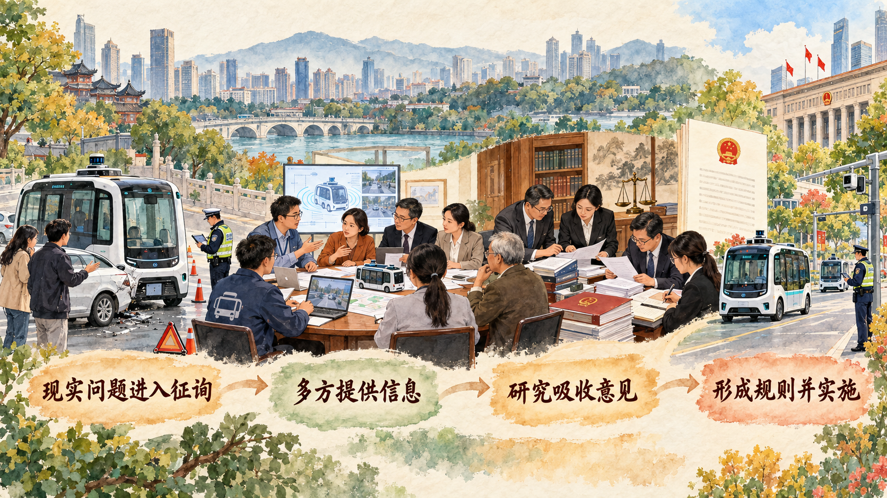

人民的意见怎样从一句话走进一部法规
全过程人民民主强调民主参与贯通国家治理全过程。理解这一概念，既要看人民是否拥有参与渠道，也要看意见怎样被收集、研究和吸收，公共方案怎样依法形成、执行并接受监督。
一、全过程人民民主是社会主义民主政治的伟大创造
全过程人民民主植根于我国人民民主长期实践。2019 年 11 月，习近平总书记在上海虹桥街道考察全国人大常委会法工委基层立法联系点时指出，人民民主是一种全过程的民主。此后，这一理念在理论和实践中不断发展，党的二十大明确指出，全过程人民民主是社会主义民主政治的本质属性。
全过程人民民主实现过程民主和成果民主、程序民主和实质民主、直接民主和间接民主、人民民主和国家意志相统一。人民意见通过制度渠道进入公共决策，依法形成国家意志，并在执行、监督和反馈中继续接受人民检验。
二、全过程人民民主是全链条、全方位、全覆盖的民主
全链条体现为民主选举、民主协商、民主决策、民主管理和民主监督相互衔接。全方位体现为人民参与国家政治生活和社会生活的多个领域。全覆盖体现为从国家发展大事到社区日常事务、从国家机关到基层群众自治组织都形成相应参与渠道。
案例研究｜一辆没有司机的车出了事故，保险怎么买
无驾驶人智能网联汽车开上开放道路以后，保险问题很快从技术讨论变成现实制度问题。传统机动车保险通常围绕车辆、驾驶人、乘客和第三方责任设计；车辆进入无人驾驶状态后，运营主体、技术系统、车辆所有人和保险机构之间需要形成新的风险分担方案。
这里的“无驾驶人”具有严格含义：车内不配备驾驶人和测试安全员。汽车仍需由远程监控系统持续观察，企业还要配备经过培训、能够处理紧急情况的接管人员。车辆从道路测试走向示范应用、示范运营和商业化运营，还要逐级满足技术、安全和运营条件。保险由此不只是事故发生后的赔付安排，也是车辆取得安全性自我声明确认、进入道路运行之前的风险准备。
上海市浦东新区工商联基层立法联系点在征询《上海市浦东新区促进无驾驶人智能网联汽车创新应用规定》意见时，把百度、东昌集团、汇纳科技等企业和保险行业人士请到同一张桌子前。技术企业能够说明感知系统、运行范围和远程监控怎样工作，汽车企业了解测试与运营场景，保险人士则要追问三个具体问题：出了事故由谁及时处理，受害人的损失由什么保险先行保障，现有商业保险能否覆盖软件、系统和运营带来的新风险。
一名保险行业代表提出，无驾驶人智能网联汽车规模化上路后，需要研究适应其特点的人身和责任保险。联系点把企业说明、行业意见和现实风险汇总后报送立法机关。正式规定把投保要求写入企业申请条件：企业需要已经投保或者承诺投保机动车交通事故责任强制保险和一定金额的商业保险。保险由此从会场中的行业建议转化为车辆进入创新应用的重要制度条件。
法规还把事故发生后的信息链条写得很细。车辆发生交通事故时，企业要立即暂停车辆运行、开启危险警示装置、报警并视情派员处置；事故发生后两小时内，需要上传事故发生前至少九十秒的视频信息。企业还要在主管部门参与下开展技术分析，形成事故分析报告并保存相关材料。保险机构据此获得处理赔付和改进产品所需的信息，监管部门也能够追踪车辆、系统和运营环节。

这条路径显示，基层立法联系点承担连接作用。现实问题由相关主体提出，专业人士补充技术与行业知识，联系点把意见原汁原味汇总上报，立法机关依据权限、上位法和公共利益研究吸收，最终通过法定程序形成规则。正式规则又同时连接投保、远程监控、事故处置、数据上传和责任认定，保险建议由此进入一套可以执行和监督的风险治理机制。
讨论题
- 围绕无人驾驶汽车保险，哪些主体必须参加征询，才能兼顾技术创新、道路安全和受害者保障？
- 一条意见从会议发言变成法规条文，中间为什么还需要调查、论证和法定审议？
- 判断这次参与是否真实、管用，你会继续观察哪些实施环节？
资料来源：上海市人民政府《基层立法联系点 9 年一步一个脚印，不断延伸到居民区、楼宇园区、社会组织》，2024 年 7 月 14 日；《上海市浦东新区促进无驾驶人智能网联汽车创新应用规定》。
三、全过程人民民主是最广泛、最真实、最管用的民主
最广泛体现在参与主体和权利内容广泛，人民依法通过多种制度渠道参与。最真实体现在权利具有制度、法律和物质保障，参与能够进入真实治理过程。最管用体现在民主制度能够协调利益、汇集意见、形成决策并推动问题解决。
判断民主实践，要沿完整过程观察：谁能够参与，信息是否充分，意见怎样汇总，决策由谁依法作出，实施结果如何反馈，权力怎样接受监督。参与、决策与治理成效由制度程序连接起来。
新闻摘录｜100 个陌生人为什么会被抽到同一张桌子
近年来，一些国家开始使用公民大会讨论气候变化、宪法改革和公共健康等复杂议题。参与者通常不是政党或利益集团推派的代表，而是从社会成员中随机抽取，再依据年龄、性别、地区和教育等特征进行分层，使小组尽量接近社会结构。
进入会场以后，参与者不会立即投票。他们先用多个周末学习议题，听取科学家、政府、行业、社会组织和不同立场人士陈述，向专家追问数据和政策后果，再进入小组讨论。主持人需要保障发言机会，使参与者能够辨认事实分歧、价值分歧和利益分歧。法国气候公民大会让成员围绕交通、住房、消费和生产等主题形成建议；爱尔兰也曾把公民大会形成的意见交给政府、议会或公投程序继续处理。
随机抽样使平时较少进入政治会议的普通人获得参与机会，学习和审议过程又帮助他们处理复杂信息。建议能否产生作用，还取决于它怎样同议会、政府和法律程序衔接，以及有关机关是否公开回应、说明采纳情况并反馈实施结果。
讨论题
- 随机抽取普通人可以提高哪些方面的代表性，又可能遗漏哪些声音？
- 专家提供信息时，怎样避免议题设置和材料选择预先决定讨论方向？
- 公民大会形成建议以后，应怎样同议会、政府决策和公众监督衔接？
资料来源：OECD, “Reshaping climate governance through democratic innovation,” 2024 年 9 月；OECD, Innovative Citizen Participation and New Democratic Institutions, 2020。
参考资料｜基层立法联系点怎样工作
基层立法联系点把国家立法机关同基层单位和群众连接起来。一项法律草案进入征询后，联系点首先识别哪些群体会受到影响，再采用座谈会、上门走访、问卷、网络征集和专题论证等方式听取意见。涉及专业技术的议题，还需要邀请行业人员、专家和一线工作人员参加。
联系点重在如实收集和报送意见。立法机关依据宪法法律、立法权限、公共利益和制度协调要求研究意见，通过法定程序审议法律草案。法律实施以后，联系点还可以收集执行中的新情况，为解释、修改和立法后评估提供信息。
这一过程可以概括为：确定征询项目，识别相关主体，组织多样化征询，汇总原始意见，立法机关研究反馈，实施以后继续收集意见。群众经验、专业知识和法定程序在这条链条上相互衔接。
资料来源：全国人大常委会法制工作委员会基层立法联系点公开资料；国务院新闻办公室《中国的民主》，2021 年 12 月；上海市人民政府基层立法联系点专题材料。